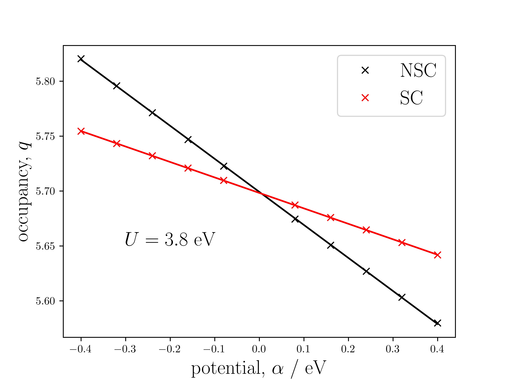

线性响应法计算 U：理论
应该使用什么值的U？
通常很难回答这个问题：“什么值的” U 应该使用哪一个？通常可以系统性地增加数值的大小？ U 直到材料的已知带隙在一定容差范围内被达到为止。这存在两个问题：材料的带隙必须通过实验测定，且仅能给出真实值的一个下限。 U．以下描述了Cococcioni和de Gironcoli提出的方法1，可以推导出给定离子在系统中的U值，基于交换–关联泛函和轨道基组的选择。
通过线性响应方法确定U值
理论
Cococcioni 和 de Gironcoli 从 Dederichs 提出的受限泛函开始。 等.2，其依赖于 \left\{n_{I}\right\} 作为输入。在实际计算中，占据数作为输出获得，无法手动控制。因此，Cococcioni 和 de Gironcoli 对其进行勒让德变换，以得到拉格朗日乘子的泛函， \left\{\alpha_{I}\right\},
原子占据数的函数的能量通过如下方式恢复。
一个额外的势能 \alpha_{I} 出现在每个相应离子的波函数角动量分量上。取决于符号的 \alpha_{I}，值为 n_{I} 将会增加或减少。这一响应被定义为，
非相互作用系统的响应， \boldsymbol{\chi}_{0}，（即一种我们不允许受扰动的电子结构重新杂化的情形）并不表示电子-电子相互作用，因此被从中减去。 \boldsymbol{\chi}哈伯德 U 参数是响应与其非相互作用部分之间的差值。
因此目标是收集单元格中所有海布德离子的占据数，其中仅有一个具有 \alpha_{I}\neq0 一次。离子的占据情况为 \alpha_{I}\neq0 通常受影响最大，然后是空间上邻近的那些稍弱一些，而远处的则影响最小。
在实际操作中
1) 一个基础计算（\alpha_{I}=0\;\forall\;I) 将被执行，并存储电子波函数和密度。
对于每一个需要请求Hubbard U值的独特离子，针对每个离子均执行以下两次计算。 \left\{\alpha_{I}\right\}:
2) 从基密度出发，进行一次非自洽（NSC）计算（恒定密度）以获得 \left\{n_{I}\right\}.
3) 从第2步开始，进行自洽（SC）计算（改变密度）以获得 \left\{n_{I}\right\}.
未在计算中包含的等效离子其占据比例可通过对称性确定。所选值为 \left\{\alpha_{I}\right\} 都很小，并且既有正也有负。在 \mathrm{eV} 例如， -0.3 到 0.3 在 0.1 增量（不包括） 0）。从最小二乘线性拟合中 \left\{n_{I}\right\} versus \left\{\alpha_{I}\right\}，响应矩阵可以按上述方程确定，并得到U。
通常人们会期望得到如下所示的线性图：
 |
|---|
| MnO 中 Mn 的 d 态占据的线性响应图。非自洽（NSC，无电子再杂化）和自洽（SC，有电子再杂化）占据在原点处相交，其中 \alpha=0 两者均表示基态占据数。 |
进一步考虑
超胞收敛
原则上， U 该值应从无限晶体中单个原子位置的变化中计算得出。在实际操作中，采用超胞方法来近似这一过程。应采取系统性的方法，即逐步增大超胞的尺寸，直至 U 值的变化小于给定的容差水平——或许 0.1 电子伏特，例如。
电中性
在他们最初提出用于计算Hubbard U参数的线性响应方法的论文中，Cococcioni和de Gironcoli指出，在响应矩阵中显式地强制电荷中性，可以减少离子与其周期性镜像之间的相互作用。这有助于加快所计算U参数相对于超胞大小的收敛速度。在实际操作中，这是通过在矩阵中增加一行一列来实现的。 \boldsymbol{\chi}。 该（N+1)^{\text{th}} 行值确保系统在所有扰动下整体电中性。
以及（）的值为N+1)第th列强制在恒定电势下不出现电荷密度变化，
在计算值之前 \chi_{(N+1)(N+1)}，必须确保已计算出所有行和列关系直到元素。 N(N+1) 并且 (N+1)N，分别地。The (N+1)(N+1) 元素随后可通过行来计算。 或者 列关系。数学上，这些矩阵会获得一个零本征值，意味着它们的逆必须谨慎计算。必须使用莫尔-彭罗斯伪逆来正确恢复其数值。该过程需要采用奇异值分解（SVD）方法，因为在施加电荷中性约束时，矩阵的行/列不再线性无关。尽管线性响应矩阵的逆现在是病态定义的，但相互作用情况与非相互作用情况之间的差异仍然是有效的。因此，使用伪逆不应引入除SVD方法所需的收敛容差之外的额外数值误差。
利用DFT+U方法确定U值
可能需要应用一个 U 值以恢复一个合理的基态系统，因此问题被提出：如何最好地结合输入 U 并计算了 U．结果 U 并非显而易见。一些文献主张将两者相加，而其他研究则呼吁采取更为细致的方法。参见Kulik 等.3 或 Shishkin 和 Sato4 用于进一步讨论。